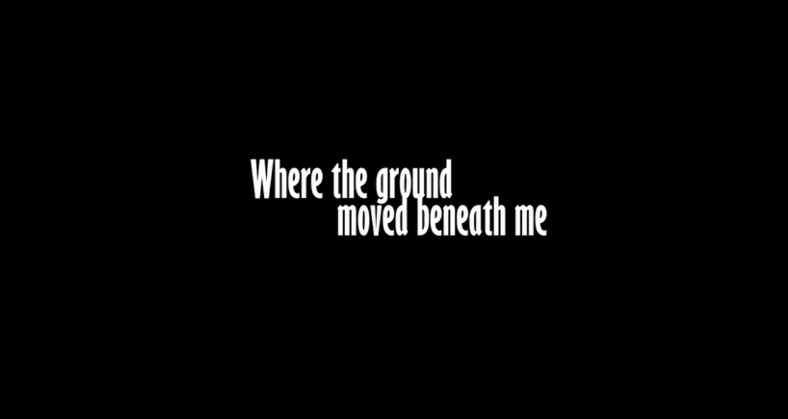
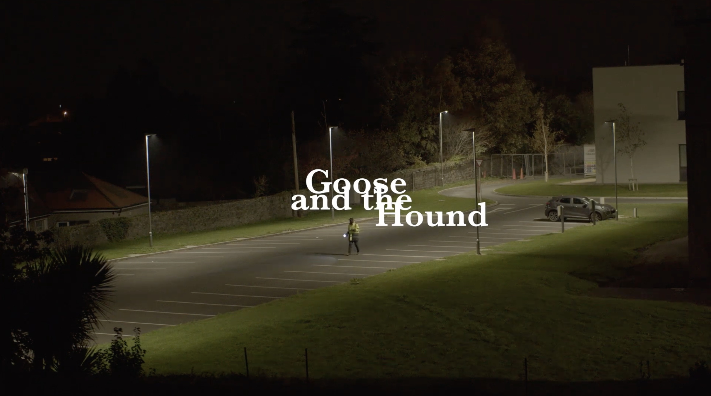
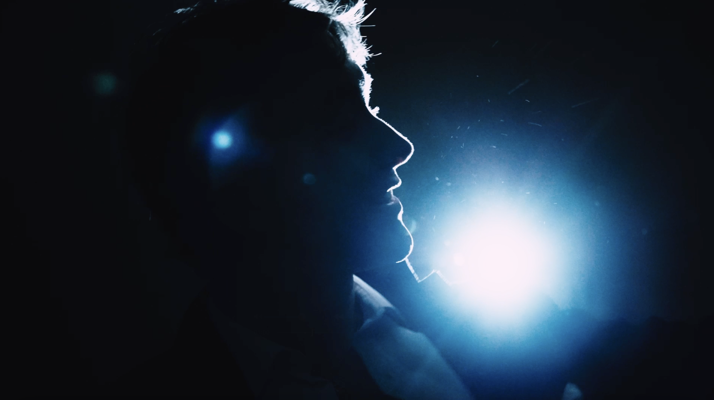

FILM / DIRECTION / EDITING
Where the Ground Moved Beneath Me
Short film exploring visual storytelling, performance and experimental filmmaking.
VIEW FILM ↗FILM • EDITING • AUDIO • MUSIC
Irish filmmaker, editor and creative based in New York City, working across film, post-production, audio and music.
View Selected WorkPORTFOLIO

FILM / DIRECTION / EDITING
Short film exploring visual storytelling, performance and experimental filmmaking.
VIEW FILM ↗
FILM / WRITING
Award-winning short film recognised for Best Script at Halloween Screams 2025.
VIEW FILM ↗
MUSIC VIDEO / DIRECTION
Music video created for Harry Kelly featuring cbakl and GavinDaVinci.
WATCH VIDEO ↗AUDIO / POST-PRODUCTION
ADR, sound editing, SFX tracklay and post-production work completed during an eight-month placement at Telegael.
ABOUT
I'm an Irish filmmaker, editor, musician and creative based in New York City.
I graduated with a BSc in Music, Media and Performance Technology from the University of Limerick, combining filmmaking, audio production, music and creative technology.
My experience spans video production, editing, audio post-production, ADR, sound design and independent filmmaking. I completed an eight-month audio post-production placement at Telegael in Ireland, working across television and film projects.
Alongside production work, I release music and create visual projects as an independent artist, giving me experience taking projects from initial concept through production and final delivery.
GET IN TOUCH
I'm currently based in New York City and open to opportunities across production, post-production, editing and media.